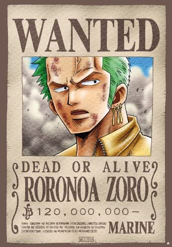
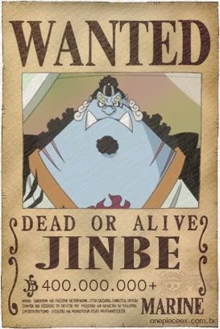

Die eigentliche Strohhutbande besteht aktuell aus zehn Mitgliedern. Sie wurde zunächst von Ruffy und Zorro gegründet und noch im East Blue schlossen sich ihnen Nami, Lysop und Sanji an. Auf der ersten Hälfte der Grandline schlossen sich ihnen dann Chopper, Robin, Frankie und Brook an. Und in der Neuen Welt trat ihnen dann auch noch Jimbei bei.
Monkey D. Ruffy
Ruffy, nach seinem Markenzeichen auch „Strohhut“ oder „Strohhut Ruffy“ genannt, ist der Kapitän der Strohhutbande. Er ist der Sohn des Revolutionäres Monkey D. Dragon sowie der Enkel von Monkey D. Garp, einem Vize-Admiral der Marine. Sein großer Traum ist es, das One Piece, einen sagenumwobenen Schatz, zu finden und damit König der Piraten zu werden. Er hat als Kind von der Gum-Gum-Frucht gegessen und besitzt daher einen dehnbaren Gummikörper. Ruffy erscheint auf den ersten Blick immer lebhaft, sorg- und ziellos und sehr neugierig. Findet er aber ein Ziel, lässt er es nicht mehr aus den Augen und gibt keinesfalls auf.
Lorenor Zorro

Zorro, auch „Piratenjäger“ genannt, ist ein ehemaliger Kopfgeldjäger und hat sich als Erster Ruffy angeschlossen. Er hat das Ziel, der beste Schwertkämpfer der Welt zu werden. Um dieses Ziel zu erreichen, trainiert er sehr hart, um den aktuell besten Schwertkämpfer, den Samurai der Meere Mihawk „Falkenauge“ Dulacre, besiegen zu können. Dabei ist er der einzige bekannte Schwertkämpfer, der gleichzeitig mit drei Schwertern kämpft. Zorro ähnelt in gewisser Hinsicht seinem Kapitän und legt großen Wert auf Loyalität. Seine Schwäche ist sein schlechter Orientierungssinn.
Nami
Nami, auch „Diebische Katze“ genannt, ist die Navigatorin und Kartografin der Mannschaft. Nami ist sehr temperamentvoll und liebt nichts mehr als Orangen und Schätze. Ihr Traum ist es, eine perfekte Weltkarte zu zeichnen. Nachdem sie in Kämpfen zunächst einen einfachen Holzstock verwendet hat, nutzt sie später den von Lysop konstruierten Klima-Taktstock, dessen Einzelteile spezielle Blasen erzeugen, die entweder Hitze, Kälte oder Elektrizität freigeben.
Lysop
Lysop, auch bekannt als „Sogeking“, ist Schütze und Waffenspezialist der Crew und vor Frankies Eintritt in die Bande der Schiffszimmermann. Lysop ist der Sohn von Yasopp, ein Mitglied von Shanks Piratenbande, und Bankina. Er ist oftmals ein Feigling, Geschichtenerzähler und Lügner, trotzdem kann man sich in brenzligen Situationen manchmal auf ihn verlassen. Sein Ziel ist es, ein tapferer Krieger der Meere und später auch der beste Schütze der Welt zu werden.
Vinsmoke Sanji
Sanji, auch „Schwarzfuß“ genannt, ist der Smutje auf Ruffys Schiff. Er hat eine Schwäche für schöne Frauen und flirtet mit jedem hübschen Mädchen, wobei er sich oft auch sehr kindisch verhält. Um seine zum Kochen benötigten Hände zu schonen, kämpft Sanji nur mit den Füßen. Sein großes Ziel ist es, den legendären Allblue zu finden – einen Ozean, in dem alle Fische der Welt zu finden sein sollen. Sanji streitet sich zudem häufig mit Zorro, wobei er ihn immer Marimo ("Mooskugel", im deutschen aber oft mit „Spinatkopf“ übersetzt, eine Anspielung auf Zorros grüne Haarfarbe) nennt. Sein voller Name lautet Vinsmoke Sanji, wie sich später herausstellt. Sanji wurde in die berüchtigte Vinsmoke-Soldatenfamilie des Germa-66-Königreiches hineingeboren. Sanji wurde jedoch verstoßen, weil er seinem Vater nicht stark genug war und Sanji seinerseits mit diesen skrupellosen Leuten nichts zu tun haben will.
Tony Chopper
Der Zuckerwatte Liebhaber Chopper ist ein männliches Rentier, das von der Mensch-Mensch-Frucht gegessen hat und dadurch zum Menschenrentier wurde. Chopper ist die einzige bekannte Person, die ihre Teufelsfrucht durch so genannte Rumble Balls verstärken kann. Er ist der Schiffsarzt der Strohhutbande. Er ist sehr introvertiert, dementsprechend schüchtern und kann nur schwer mit Komplimenten umgehen, besitzt aber die Fähigkeit, mit Tieren zu sprechen. Durch seine Naivität und Begeisterung für banale Kleinigkeiten und Ereignisse wirkt er zudem häufig wie ein kleiner Junge. Dadurch, dass Chopper dank der Mensch-Mensch-Frucht zum Menschenrentier geworden ist, ist er in der Lage sich zu transformieren, was ihm einen individuellen Kampfstil verleiht.
Nico Robin
Nico Robin ist Archäologin und das viertälteste Mitglied der Crew. Sie aß von der Flora-Flora-Frucht, die ihr die Fähigkeit verlieh, an allen möglichen Stellen, welche sie sehen kann, Teile ihres Körpers wachsen zu lassen. Ihr Ziel ist es, das Rio-Porneglyph zusammenzusetzen, das die Wahrheit über die wahre Geschichte enthalten soll. Aufgrund ihres archäologischen Studiums und der Vernichtung von Ohara ist sie die einzige Person auf der Welt, die diese Porneglyphe lesen und entziffern kann.
Cutty „Franky“ Framm
Frankie, eigentlich Cutty Framm, ist ein Cyborg und der Schiffszimmermann der Strohhutbande, nachdem diese ihn und Robin von der Justizinsel Enies Lobby gerettet haben. Sein Traum ist es, ein Schiff zu bauen, mit dem er die Welt umsegeln kann. Dieses Schiff soll das neue Schiff der Strohhutbande sein, welches die Bande als Dankeschön erhalten hat. Damit das Traumschiff dies aber schaffen kann, nahm er Ruffys Angebot zum Beitritt an.
Brook

Brook, auch häufig „Soul King“ genannt, ist ein lebendes menschliches Skelett und war Mitglied der Rumba-Piratenbande. Dass er ein lebendes Skelett ist, verdankt er der Totenreich-Frucht, die es seiner Seele ermöglichte, nach seinem physischen Tod wieder in seinen Körper zurückzukehren. Allerdings irrte seine Seele zu lange umher, so dass sein Körper in der Zwischenzeit verweste. Brooks Markenzeichen ist sein Afro, und es ist der Traum des Musikers, die Reise, die er mit den Rumba-Piraten begann, zu beenden und seinen Freund, den Riesenwal La Boum, nach mehr als 50 Jahren wiederzusehen und davon zu berichten. Brook ist ein außergewöhnlich talentierter Fechter. Als Waffe verwendet er ein Shikomizue, eine Klinge, die in seinem Spazierstock verborgen ist.
Jimbei

Jimbei, auch „der Ritter der Meere“ genannt, ist ein Fischmensch, war Mitglied in der Sonnen-Piratenbande und wurde danach Kapitän der Fischmenschen-Piratenbande. Er war zu dem einer der 7 Samurai der Meere. Er wurde im Impel Down gefangen gehalten, nachdem er sich weigerte gegen Whitebeard und seine Allianz zu kämpfen. Während seines Aufenthaltes in Impel Down freundete er sich mit seinem ehemaligen Feind Ace an, mit dem er auch dieselbe Zelle teilte. Jimbei und Ace kannten sich schon früher, sie haben sich in der Vergangenheit mit einander duelliert. Er schloss sich Ruffys Allianz an und kämpfte an Ruffys Seite in der Großen Schlacht von Marine Ford. Dabei half er Ruffy lebend aus der Schlacht zu entkommen und stand ihm bei seiner Trauer über den Verlust von Ace bei. Zwei Jahre Später, nach Austritt der Fischmenschen-Piratenbande aus der Big Mom Crew, trat Jimbei den Strohhut Piraten bei.